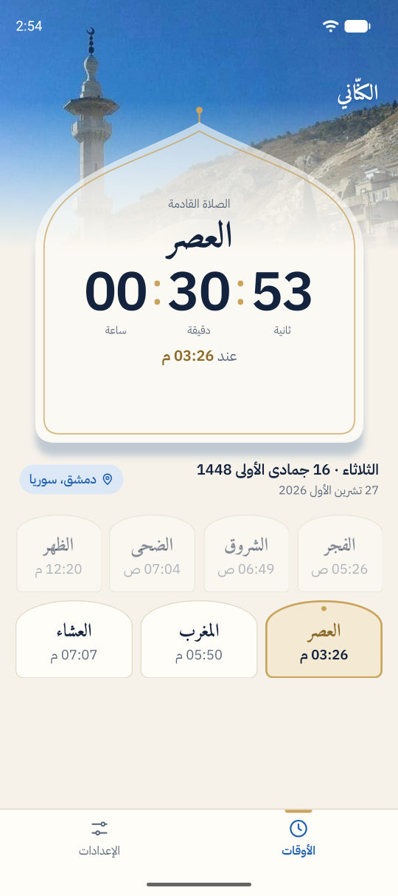

الإصدار الأخير
آخر إصدارعندك إصدار أقدم؟ ثبّت الجديد فوقه مباشرة، فتبقى إعداداتك كما هي. سجلّ كل الإصدارات
مواقيت الصلاة والأذان
يعرض الوقت المتبقي للصلاة القادمة، ويُبقيه أمامك في إشعار دائم، ويشغّل في وقت كل صلاة الأذانَ الذي اخترته لها. دون إعلانات، ودون حساب.
التطبيق غير متاح الآن لأجهزة iPhone وiPad، فهو لأجهزة Android فقط.
افتح هذه الصفحة من هاتفك الذي يعمل بنظام Android، ونزّل التطبيق منه مباشرة.

الصلاة القادمة ووقتها، والعدّاد إليها.
أوقات اليوم كلها مع تمييز القادمة، والعدّاد، والتاريخ الهجري، ومنطقتك.
يظهر الإشعار الدائم على شاشة القفل، فترى الوقت المتبقي للصلاة دون أن تفتح الهاتف.
لإضافة الويدجت: اضغط مطوّلاً على مكان فارغ في الشاشة الرئيسية، ثم اختر «الأدوات» (Widgets)، وابحث عن «الكنّاني»، واختر المقاس الذي تريده.
تُحسب على جهازك وتعمل دون إنترنت. وفي سوريا يعرض جداول وزارة الأوقاف الرسمية لكل منطقة.
لكل صلاة: أذان، أو إشعار فقط، أو لا شيء. ويعمل الأذان والتطبيق مغلق والشاشة مقفلة.
أذانات بأصوات المرعشلي والأستاذ بلال عبد العزيز وسعد، وأذانات خاصة بالفجر. تُحفظ على جهازك بعد أول تحميل.
إشعار دائم يعدّ للصلاة القادمة ويظهر على شاشة القفل، وعند توسيعه تظهر أوقات اليوم كلها.
بمقاسين: صغيرة للصلاة القادمة مع العدّاد، وكبيرة للأوقات كلها والتاريخ الهجري.
تذكير صوتي قبل أذان الفجر كل يوم، وقبل أذان العشاء يومَي الأحد والخميس.
بتقويم أم القرى، ويمكنك تعديله بيوم أو يومين.
لا حساب ولا إعلانات ولا أدوات تحليل. موقعك وإعداداتك تبقى على جهازك.
واجهة عربية بالكامل، تتبع وضع جهازك أو تختاره بنفسك.
أربع شاشات قصيرة، مرة واحدة فقط، ثم يعمل الأذان في وقته. ويمكنك تغيير كل شيء لاحقاً من الإعدادات.
عندك إصدار أقدم؟ ثبّت الجديد فوقه مباشرة، فتبقى إعداداتك كما هي. سجلّ كل الإصدارات
التطبيق ليس على Google Play بعد، والهاتف يحذّر من كل تطبيق يأتي من خارج المتجر، لا من هذا التطبيق بعينه. نزّل الملف من هذه الصفحة فقط، ثم اتبع .
ينبّهك التطبيق عند صدور إصدار جديد. نزّله من هذه الصفحة وثبّته فوق الإصدار الحالي، فتبقى إعداداتك وملفات الأذان كما هي. لا تحذف التطبيق قبل التحديث، لأن حذفه يمسح إعداداتك.
مرة واحدة، لتحميل الأذانات التي تختارها (نحو 18 ميغابايت بالاختيار الافتراضي). بعدها تُحسب الأوقات ويُشغَّل الأذان دون إنترنت.
لا، التطبيق متاح الآن لأجهزة Android فقط.